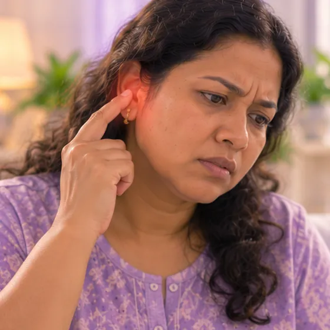

鼓膜内陷
鼓膜因其后方压力偏低而向内凹陷
这是什么
连接耳朵和鼻后部的小管道不能顺畅打开，鼓膜后方的气压下降，把鼓膜向内拉，所以耳朵感觉堵塞。
- 中耳和鼓膜
- 儿童和成人
- 耳朵堵塞、听不清
- 就诊科室
- 耳鼻喉科医生、家庭医生
- 多发人群
- 感冒、过敏、鼻塞的人；儿童
- 传染性
- 不传染
- 病程
- 鼻子和耳管通畅后常会好转；有些人需要复诊
常见表现

耳朵闷堵耳闷 
听不清别人说话听力下降 
耳朵痛耳痛
其他症状
- 吞咽或打哈欠时耳内有啪啪声或咯咯声
为什么会这样

细菌或病毒感染感染性病因
其他原因
- 感冒、过敏或鼻塞
- 气压突然变化，如乘飞机或潜水
- 儿童的腺样体肥大
出现这些情况请先看医生
- 突然听不见：当天就医
- 一侧脸部无力或下垂：立即去医院
- 严重天旋地转的头晕
- 剧烈耳痛、发烧，或耳内流液、流血
- 孩子拉扯耳朵、发烧或听力不好：尽快看医生
如果有以上情况，请先看医生，再来做调理。
本页只是一般性的健康资讯。请继续按时服用平常的药物，并继续看医生。
请继续日常治疗
请继续按医嘱服药，并按时复诊。我们的调理是温和的辅助，不能代替医疗。
日常护理

咨询药剂师药剂师建议
更多自我照顾的方法
- 多吞咽、嚼口香糖或打哈欠，帮助耳管打开
- 不要用力擤鼻涕，要轻轻地一次擤一侧
- 远离过敏原、烟雾和灰尘
- 不要掏耳朵；如果一直堵塞，请看医生
告诉理疗师
- 严重过敏
- 发烧或正在感染
- 怀孕
- 心脏起搏器或金属植入物
调理师会在开始前和你确认这一项。
常见问题
鼓膜内陷是什么？
鼓膜因其后方压力偏低而向内凹陷。连接耳朵和鼻后部的小管道不能顺畅打开，鼓膜后方的气压下降，把鼓膜向内拉，所以耳朵感觉堵塞。
鼓膜内陷有哪些常见表现？
耳朵闷堵；听不清别人说话；耳朵痛
为什么会有鼓膜内陷？
细菌或病毒感染
有鼓膜内陷要怎么照顾自己？
咨询药剂师
AI Body Master 的调理对鼓膜内陷有帮助吗？
调理是温和的无针经络养生辅助，不能治疗或治愈鼓膜内陷，也不能代替药物或医生。开始前请告诉理疗师。
相关疾病
参考资料: General information based on public health sources such as Mayo Clinic, NHS, Cleveland Clinic and NCBI StatPearls.
页面更新: 2026-11-01